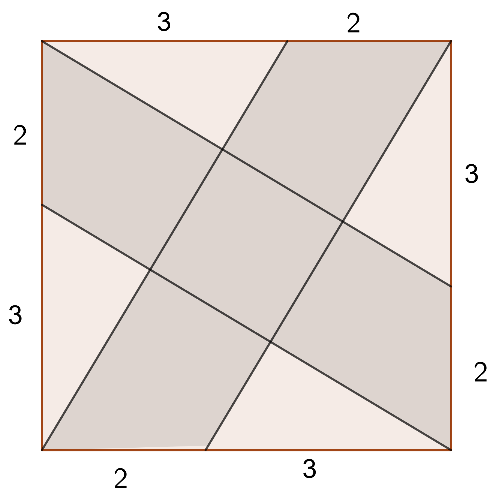
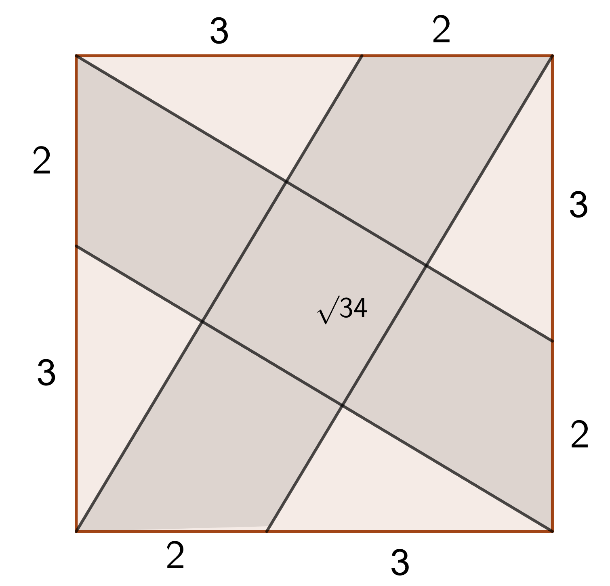
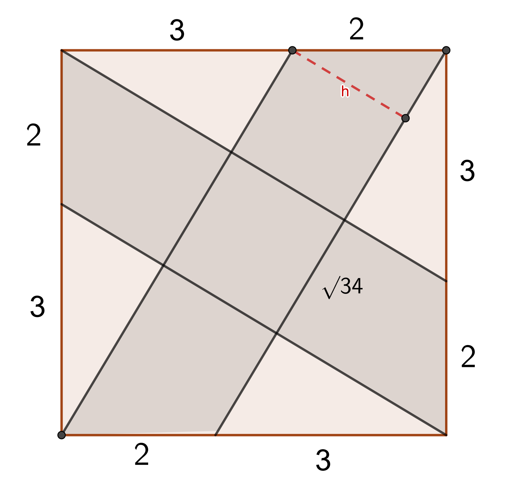
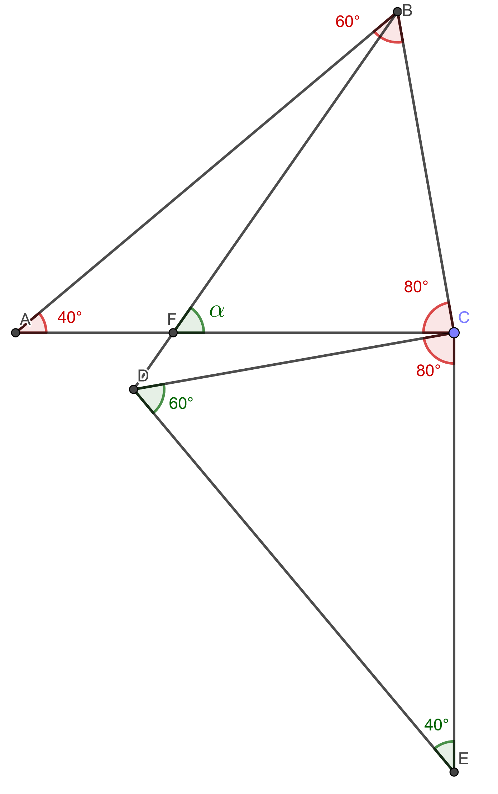

Inicialmente, tenemos esta figura.

Como la figura es un cuadrado, tenemos que los triangulos formados son
triángulos rectángulos.
Con esta información, podemos aplicar el Teorema de Pitágoras.
Este teorema nos dice que la suma de los cuadrados de los lados del triángulo
que forman el ángulo de 90°, es igual al cuadrado de la longitud del otro lado.
En este caso, los lados que forman el ángulo de 90° son el de 3 y el de 5.
Aplicando el teorema, tenemos que
32 + 52 = lado2
Por lo que 34 = lado2
Con lo que concluimos que lado=√34.
con este dato, obtenemos la siguiente figura:

Con este dato, podemos decir que el área sombreada son dos romboides sobrepuestos.
Sabemos que la fórmula del área del romboide es bh. Pero como no conocemos
la altura, para calcular el área de uno de los romboides, simplemente restamos el área
total del cuadrado menos el área de los dos triángulos.
Tenemos que el área de un triángulo es bh⁄2. Sabemos que
b=3 y h=5, por lo que el área es 7.5. Y como son 2 triángulos, el área de ambos en
total es 15.
Pero como se mencionó anteriormente, necesitamos restar el área total del cuadrado, menos
los 15 de área de los triángulos.
La fórmula del área de un cuadrado es lado2 y como el lado es de 5, entonces
el área es 25.
con esto concluimos que el área de uno de los romboides es de 10.
Ahora queremos calcular la altura del romboide, la cual la denominaremos h. Como se
muestra en la figura.

Como se mencionó previamente, la fórmula del área de un romboide es bh. Por lo que tenemos
la siguiente igualdad:
A=bh.
Como queremos conocer h, la aislamos y para ello pasamos del otro lado a b, por lo que:
h= A ⁄ b
Sabemos que el área es 10 y la base es √34. Por lo que h= 10
⁄ √34
Con esta información, ya podemos calcular el área sombreada. La cual es la suma de ambos
romboides menos el área que comparten, la cual es un cuadrado de lado h.
Previamente se dijo que el área de cada romboide era 10, por lo que el área de ambos es
de 20.
Y el área de un cuadrado de lado 10 ⁄ √34 es
igual a 100 ⁄34
Por lo que el área sombreada es 20 - 100 ⁄34.
Lo que es igual a 580 ⁄34 y en notación decimal es 17.058
Denotemos a las canicas rojas y azules como r y a respectivamente
Tenemos que cuando quitas una roja, es decir r-1, 1/7 de las canicas que quedan son rojas.
Lo cual puede ser reescrito como:
r-1 = (1⁄7)(r+a-1)
Como el 7 está dividiendo, lo pasamos multiplicando y tenemos que:
7r-7 = r+a-1
7r = r+a+6
6r = a+6
Después, el problema nos dice que la cantidad de rojas es igual a 1⁄
5 del total menos 2. Entonces lo reescribimos como:
r = (1⁄5)(r+a-2).
Como el 5 está dividiendo, lo pasamos multiplicando y obtenemos:
5r = r+a-2
4r = a-2
Si sumamos ambos resultados que subrayamos, concluimos que 10r = 2a+4.
Al dividir entre 2, tenemos que 5r = a+2.
Pero antes, dedujimos que 5r = r+a-2, por lo que podemos decir que:
r+a-2 = a+2
r+a = a+4
Por lo que r = 4.
Al principio, dijimos que r-1 = (1⁄7)(r+a-1). Si sustituimos,
tenemos que:
3 = (1⁄7)(3+a).
al multiplicar por 7, tenemos que:
21 = 3+a
Por lo que a = 18.
Por lo tanto, la cantidad de canicas que hay en total es 22.
En el △CDE podemos ver que el ∠CDE = 80° ya que la suma de los
ángulos internos de cualquier triángulo es de 180°.
Después notamos que como fue una figura rotada, entonces deben conservar las medidas de
sus ángulos.
En este caso, vemos que A es E; B es D y C sigue siendo C.
Con esta información, podemos trasladar los ángulos, obteniendo la figura de la derecha.

Como fue una rotación de 90° y el ∠DCE = 80°, entonces el ∠FCD = 10°.
Con esta información, podemos decir que el △BCD = 90°.
Previamente, dijimos que D era el equivalente de B, por lo que CD = CB.
Esto nos quiere decir que los ángulos ∠CDB y ∠DBC son iguales.
Y al ser ∠BCD un ángulo de 90°, los otros dos son de 45°.
Ahora ya tenemos todas las medidas del triángulo △BCF escepto α.
Por lo mencionado anteriormente de la suma de los ángulos internos de un triángulo,
podemos decir que 180° = ∠FBC + ∠BCF + α
Si sustituimos, tenemos que 180 = 45 + 80 + α.
180 = 125 + α
α = 180 - 125
α = 55°